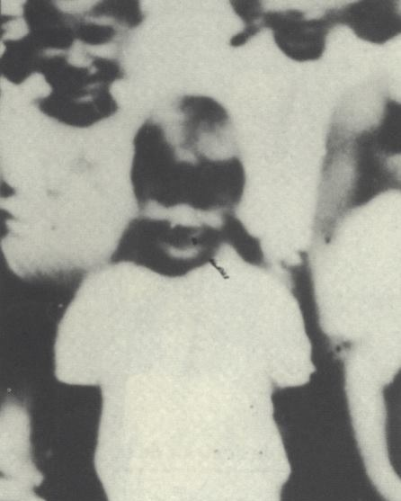

Portrait d’archive
Emile Zuckerberg
Emile ZUCKERBERG
Emile ZUCKERBERG est né le 15/05/1938 à Anvers en Belgique.
Rassemblé à Lyon, il est déporté à Auschwitz le 13/04/1944 par le convoi n°71.
Fils de Zygmund et de Serla, tous deux déportés le 14 septembre 1942 par le convoi n°33 après avoir été internés à Rivesaltes. Séparé de sa monitrice, Léa Feldblum il fut "sélectionné" pour la chambre à gaz.
Dernière adresse connue : non renseignée (Izieu)
Nom : ZUCKERBERG
Prénom(s) : Emile
Date naissance : 15/05/1938
Âge (ans) : 5
Lieu naissance : Anvers
Pays ou département : Belgique
Lieu rassemblement : Lyon
Dernière adresse : ?
Ville : Izieu (Ain)
Code postal : 01300
N° Convoi : 71
Date déportation : 13/04/1944
Informations diverses : Fils de Zygmund et de Serla, tous deux déportés le 14 septembre 1942 par le convoi n°33 après avoir été internés à Rivesaltes. Séparé de sa monitrice, Léa Feldblum (survivante), il fut "sélectionné" pour la chambre à gaz.
Lieu de déportation : Auschwitz
Lieu de départ : Drancy
Nombre total de déporté·e·s du convoi : 1500
Gazé·e·s à l'arrivée : 1265 (84,3 %)
Survivant·e·s en 1945 : 128 (8,5 %)